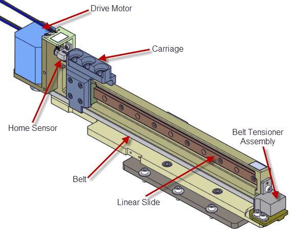
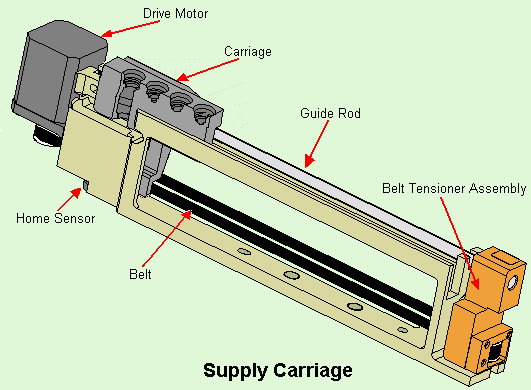
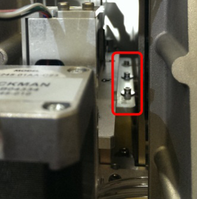
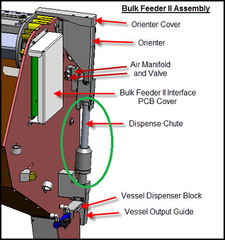
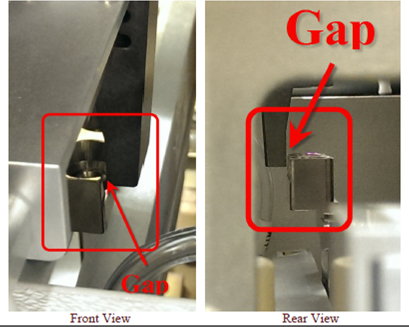
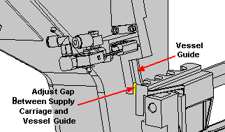

This procedure describes how to mechanically adjust the supply carriage to the bulk vessel feeder prior to performing any alignments on this module.
Required Materials for New-style Supply Carriage:
0.060-inch feeler gauge
OR
Feeler gauge set
0.019-inch feeler gauge
0.020-inch feeler gauge
0.021-inch feeler gauge
Figure 94: New style supply carriage

The new-style supply carriage adjustment gap to the Bulk Feeder II vessel feeder or guide requires 0.060-inch. The required feeler gauges are combined together to achieve a 0.060-inch feeler gauge.
The new-style machined supply carriage was cut in with serial number 603424 and 900770.
The new-style die-cast supply carriage was in cut with serial number 605435 and 901395.
Required Materials for Old-style Supply Carriage:
0.015-inch feeler gauge
Figure 95: Original style supply carriage

The old-style supply carriage adjustment gap to the original Bulk Feeder vessel feeder or guide requires 0.015-inch.
Prepare the instrument.
Open the main upper left and right covers.
Power off the motors using the switch on the power distribution PCB labeled "All DC power (except CPU and reagent coolers)".
Adjust supply carriage to the bulk vessel feeder position.
Use a 9/64 inch wrench or hex driver to loosen the three screws securing the supply carriage mounting plate to the gantry tower.
Rear View of Supply Carriage/Shuttle Assembly

Note:Bulk Feeder II only - For better access to the three screws, remove the bulk feeder dispense chute tube by pushing it up and then angling it out. Remove all RVs in the tube and any fallen RVs in the carriage and bulk feeder areas. Remember to reinstall the tube when finished adjusting the gap.
Front Right Side View of Bulk Feeder II Assembly

Move the supply carriage so that it intersects with the vessel guide on the bulk feeder.
Using the required feeler gauge, adjust the gap between the alignment surfaces of the vessel guide on the bulk feeder and the supply carriage to the required inch.
Note:For Die-Cast Supply Carriage only - The supply carriage may have uneven surfaces. Check the right side of the carriage for the uneven surface and use that to adjust the gap if necessary.
Note: It would help to adjust the gap better if inserting the feeler gauge on the vessel guide from the rear and gently slide the carriage assembly toward the vessel guide until the carriage gently holds on the feeler gauge.
New-style carriage adjustment gap is 0.060 inch.

Old-style carriage adjustment gap is 0.015 inch.

Tighten the three screws securing the supply carriage mounting plate to the gantry tower.
The three screws should be spaced evenly in the slots. This indicates the carriage is straight.
Recheck the adjustment of the supply carriage to the vessel guide.
Note:Bulk Feeder II only - Re-install the bulk feeder dispense chute tube if it was removed.
Power on the motors using the switch on the power distribution PCB labeled "All DC power (except CPU and reagent coolers)".
The supply carriage interacts with the bulk vessel feeder and the sample pick-and place; align the supply carriage to the bulk vessel feeder and the sample pick-and-place modules.